Rundfunker [WLAN mp3 player] [Deutsche Version]
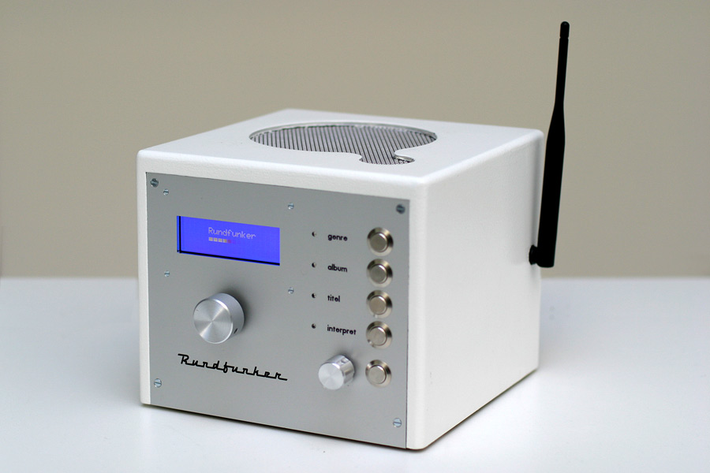
The Rundfunker is a tabletop mp3 player that scans the WLAN for local audio sources and is able to play shared audio-files. It has a built-in 2-way speaker system, a LC display and a very simple yet powerful user interface. The device is independent of any external peripheral equipment - all hardware components are integrated into the appealingly designed housing including an exclusive aluminium front panel. All you need is 12 V DC power supplied e.g. by a mains adapter.
The Rundfunker is driven by various parts we developped from scratch - such as a customized Linux, operating software implemented in Java and a circuit board for connection of hardware (LC display and buttons). The idea of the Rundfunker was born at the FH Augsburg, University of Applied Sciences. Our 5-man team (Mathias Bauer, Christoph Beckmann, Christian Leberfinger, Stefan Loibl, Jan Peuker) has designed and implemented the entire software and has made it available as open source. Moreover we constructed two fully functional prototypes - all in all we worked about 5 months on this project.
The idea of developping a wlan radio emerged from the desire to combine the advantages of a FM receiver with those of a personalised collection of music on a PC. A FM receiver usually is compact, portable and uncomplicated in use. Unfortunately the programme of the radio stations is not everyone's cup of tea. The mp3 files on a personal computer could be an alternative, however they have the huge drawback of normally being located on a more or less immobile computer. Thus they can hardly be heard beyond the four walls of the room the PC stands in (without annoying the neighbours).
Our Rundfunker is an elegant solution for this circumstance. It is a radio-shaped mp3 player that offers wireless access to all mp3s that are shared in the local network and thus isn't subject to the volume-restrictions of the popular mp3 USB sticks with unhandy tiny buttons that nowadays have a capacity of only few gigabytes. Via WLAN the Rundfunker can deal with huge audio-libraries with hypothetically unlimited size.
Rundfunker is mobile, yet not made for real portable use like Walkman and co - it shows its strength within the reach of the wireless home network: The device doesn't have to make do with an ultra-compact housing like an iPod, but consists of a cubic box (dimensions: 21×21×18 centimeters) that holds enough volume for the integrated 2-way speaker system, an exclusive aluminium front panel containing easy to use buttons and a clearly arranged LC display.
A typical use case for the Rundfunker would be: the study in the upper floor has a PC with a harddisk filled with your most precious and well-sorted songs e.g. recorded from your old vinyl records. Your Rundfunker is situated in your kitchen and can play these mp3s via WLAN. The listener has various possibilities of influencing the playback. By means of the easy to use interface he can choose his favourite album or genre or simply browse through the entire collection of mp3s.
Power supply is the only thing you need to take the Rundfunker into operation. To enable the Rundfunker to play your songs, you can use the comfortable webinterface and configure your IP-address and your shared audio-sources. You can also use the Java-Applet in the webinterface to operate your Rundfunker by remote control.
Mainboard
We decided to use a completely passively cooled VIA Epia-Board. We agreed on buying the MS 10000E LVDS, because it offers serial and audio ports shaped as pinheaders, a PCI slot and has a built in compact-flash connector that we use to boot Troubadix, our specially customized Knoppix derivate. Unfortunately, the 12V DC-DC ATX power supply unit we ordered didn't fit onto the board, because it interfered with the massive cooler of our Epia. We first thought of using an ATX power extension, but fortunately our university's locksmithery was able to perfectly mill the cooler the way we needed it. WLAN connectivity is offered by a PCI card - having quite a big antenna on the Rundfunker's side was our very intention and fixing it directly to the PCI card was the easiest way to achieve this aim.
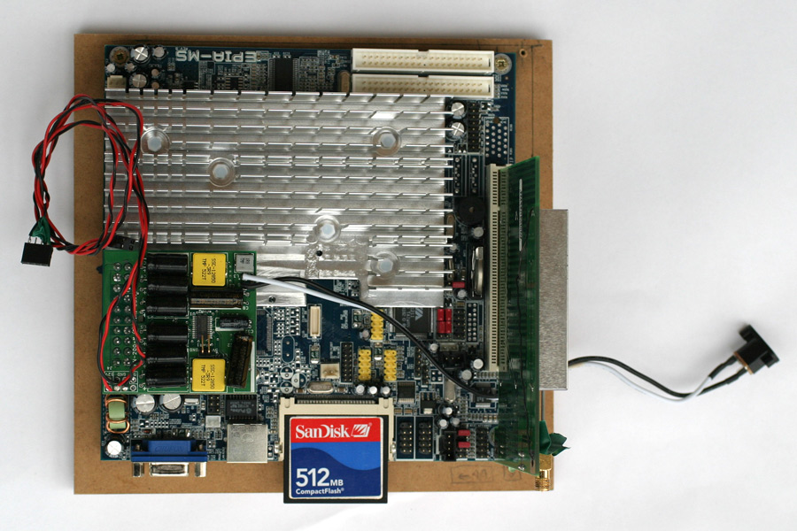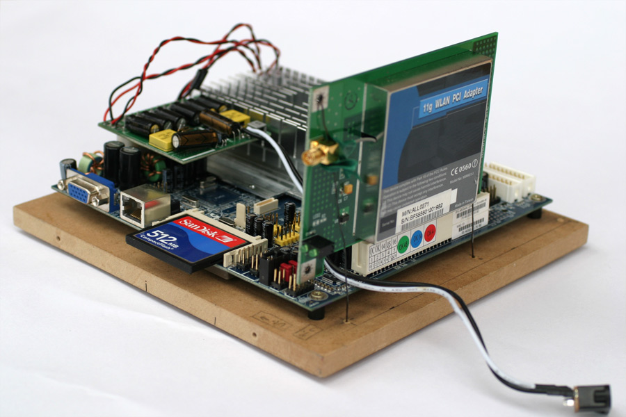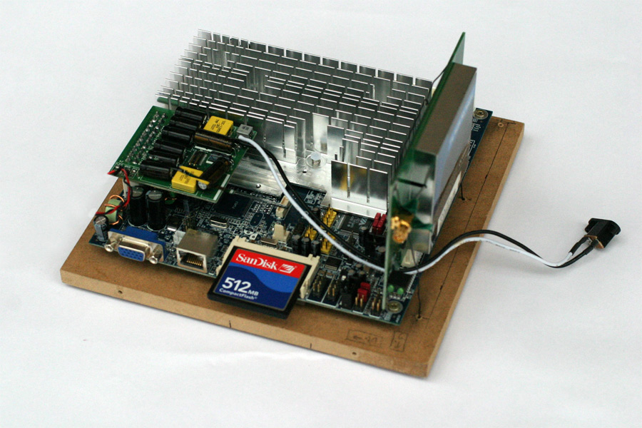
Operating system (Troubadix)
Troubadix is a specially customized linux (Knoppix-derivative) that differs from other mini-distributions by containing the complete Knoppix kernel 2.6, MySQL 4.1, Apache2, PHP5, OpenSSH and Sun's JRE 1.4.2 - however no X and thus no window-manager. Since Troubadix is booted from a compactflash card, no moving parts are installed in the housing that could be damaged during transport. By the way: Forcing Troubadix to boot from compact-flash card was trickier than we first thought.
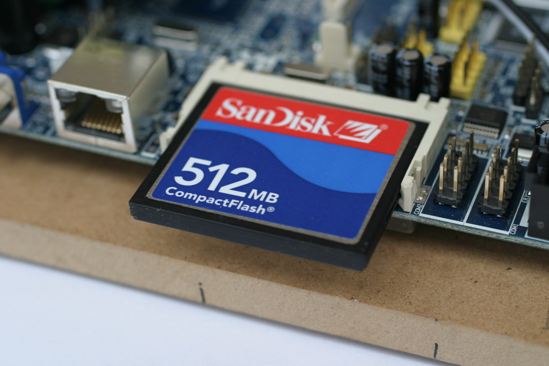
Troubadix requires less than 200 MB - the free space on the compact-flash is used for our Java software and the underlying database system
Configuration
Fundamental options can be set comfortably through the webinterface, that was implemented in PHP. You can also use the integrated Java applet to operate your Rundfunker by remote control - just as if you had the device right in front of you.
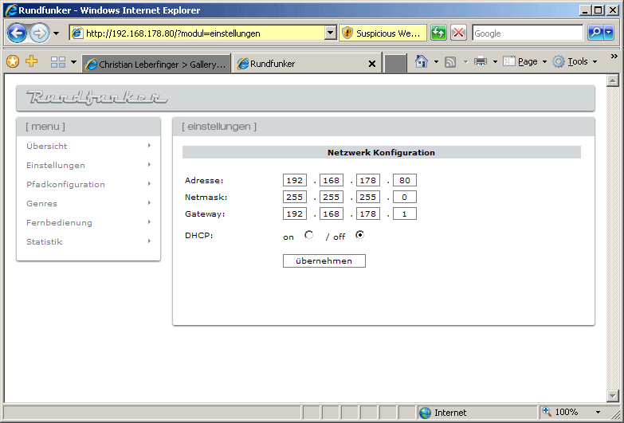
Basic configuration
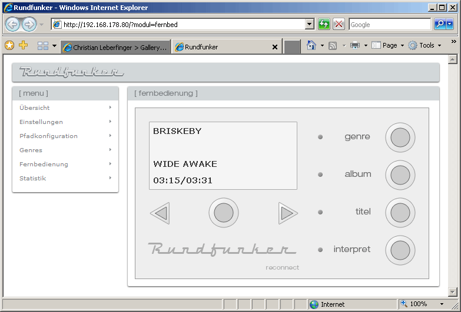
Remote control (Java-Applet)
Connecting buttons, LCD, rotary encoder to Epia
The connection between our Java software and the hardware is achieved by a small self-designed circuit board. A microcontroller running our code communicates with the mainboard via the serial port. In this way it can forward user-input to our Java-tool and receive output for the LC display. Developping this board and the software running the microcontroller was one of the hardest tasks we had to cope with, because we never did anything like it before. We used Eagle to layout the circuit board and Atmel AVR Studio to program our Atmel Atmega 168. Using the Atmega 168 was a wrong decision that cost a lot of time, because it didn't offer enough connector pins for our project. Unfortunately we bought a complete microcontroller-module that was quite pricey. So we didn't want to replace them, but had to find a workaround using a shift register and a 8-to-3-decoder. By mischance, we mistook the datasheet of the shift register during design time of the circuit board and therefore had to do some soldering workaround here too ;)
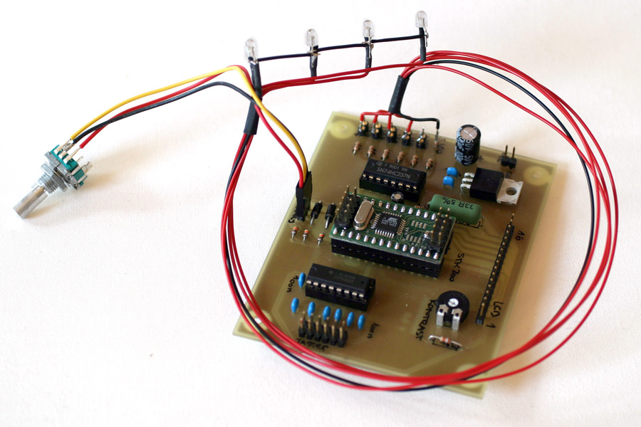
The circuit board fitted with components
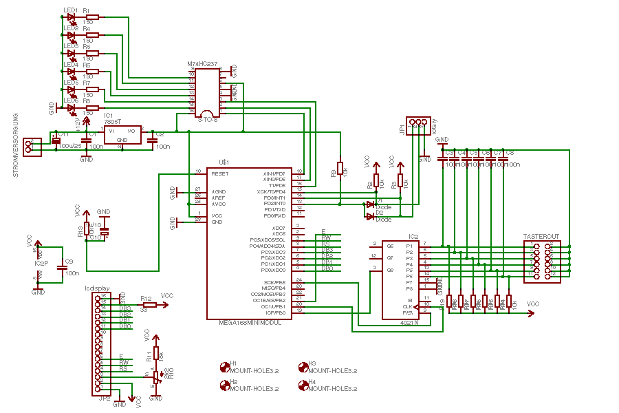
Circuit diagram of our board
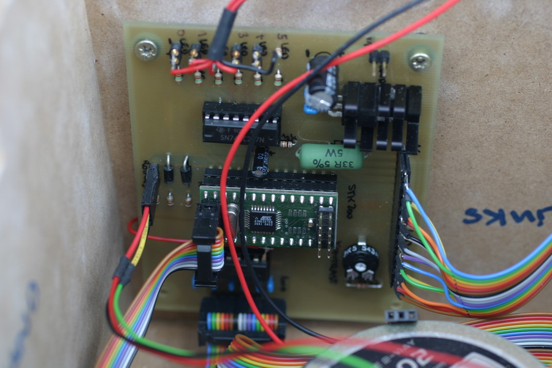
The finished and installed circuit board in Rundfunker's housing
User application
On this system runs an entirely self-developed and -implemented Java program, that scans the WLAN for audiofiles, is able to play them and lets the listener control the device. Our software design focused on a strictly object oriented and easily extensible structure. The remote control applet we implemented in our web interface is just one possible extension. You could think of implementing a Java class for integrating an IR-remote control, an interface recognising your voice and thousands of other pretty things. If you want to show the capability of a software you developped a common way is to show screenshots. In this special case we didn't really have a screen - but here are some screeners of our LC display:

The Rundfunker's standard-screen during playback (previous/next song when turning jog-dial)
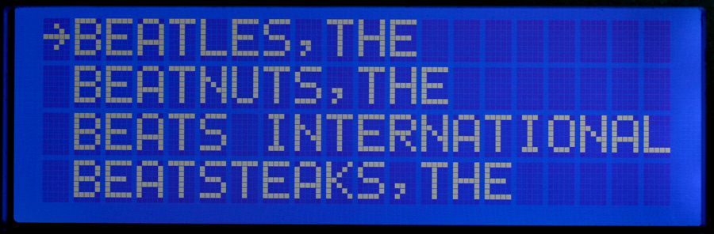
List of artists - browsing and selecting via jog-dial (ALPS rotary encoder)
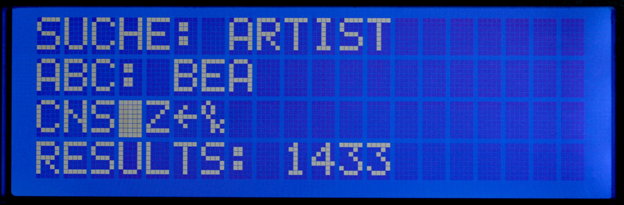
The most comfortable way of choosing an artist from a huge list of entries: Rundfunker's speller functionality
Hardware/Software
Hardware:
- VIA Epia Mini-ITX-Motherboard (1 GHz CPU, 256 MB RAM)
- LC-Display (4 x 20 characters)
- self-developed circuit board with electronic components to connect display, buttons, LEDs and Jog-Dial
- Microcontroller to control the hardware
- 2-way speaker system with good audio characteristics
Software:
- Microcontroller software (developed in C) to control the hardware
- Java program to handle user input, play back audiofiles and scan the WLAN
- PHP webinterface for configuration and controlling Rundfunker by remote
Housing
The housing of the Rundfunker consists of medium density fiberboard (MDF). It was designed, built and varnished all by ourselves. Only the exclusive aluminium front panel we designed was crafted by a company based in Berlin.
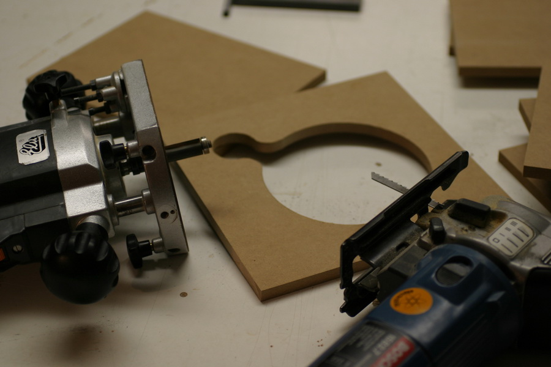
Tools used for fitting the first parts of Rundfunker's housing
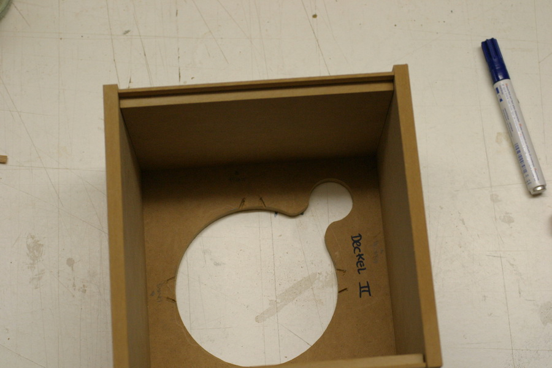
Almost done, but still very empty ;)
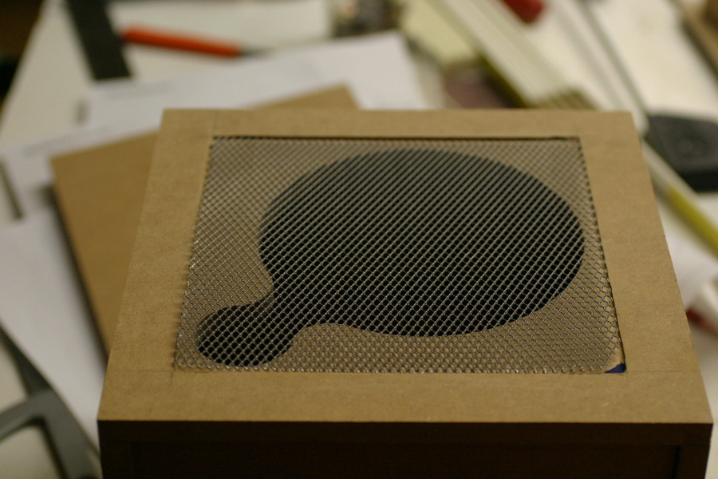
The fence protecting the loudspeakers from ungentle contact (clearance was millcut and afterwards covered by a second MDF panel)
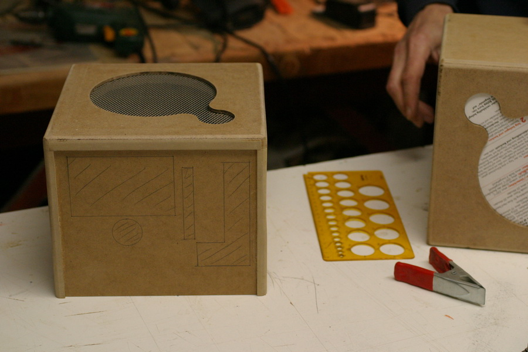
Covered loudspeaker-fence and marks prepared for jigsawing the front panel
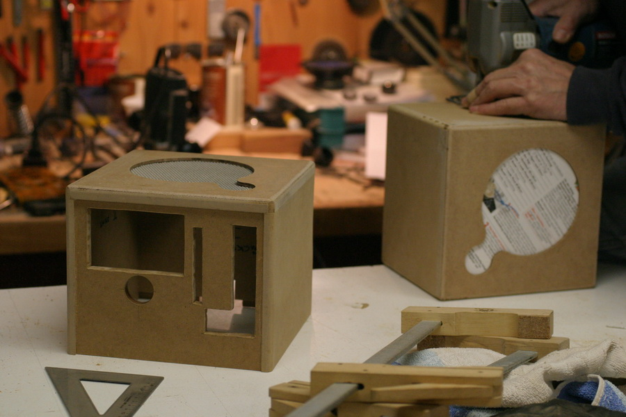
Our jigsaw in action
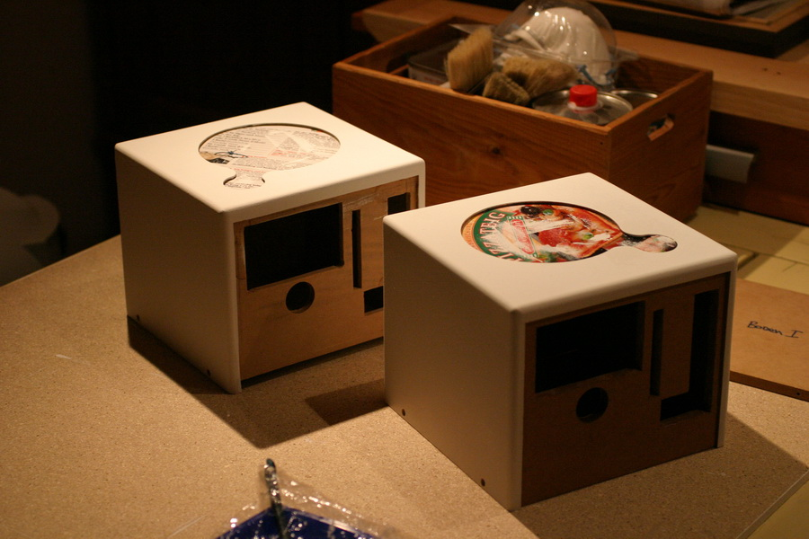
Varnishing the housings was definitely not our favourite job - we had to do it about a thousand times to get satisfactory results
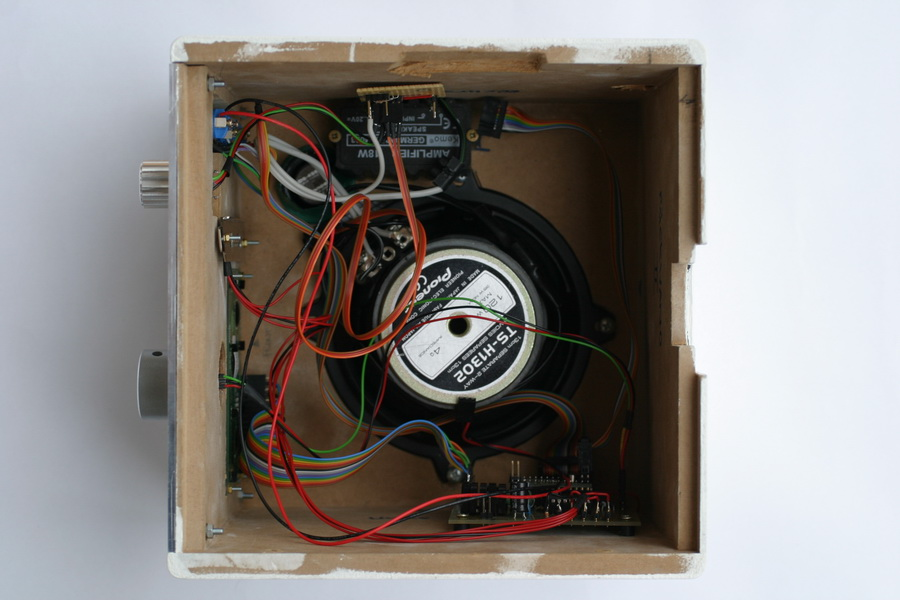
Everything in its right place ;)
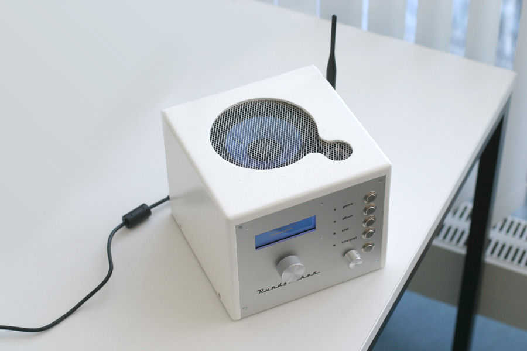
The finished housing holding all components
Audio components
Our Rundfunker has an integrated amplifier providing 18 watts of power to the built in 2-way Pioneer speaker system.
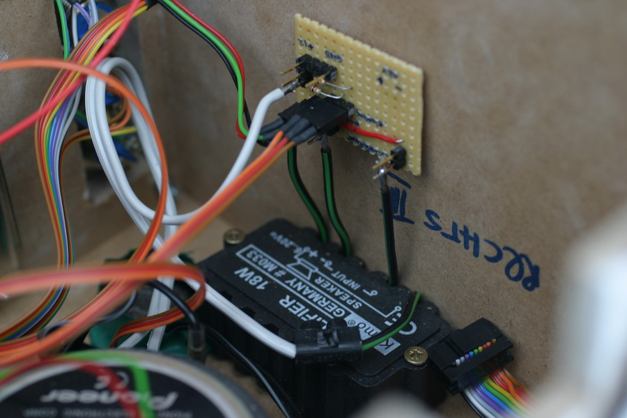
A small circuit board combines the two stereo channels and supplies power to the amplifier
Project Management
Every step of design and development was coordinated with help of a ticket system (Trac) and documented in an integrated Wiki - all managed by the versioning system Subversion. All sources, circuit diagrams and other documents we created during development phase are accessible to everybody on our project's server: https://troubadix.multimedia.fh-augsburg.de/rundfunkertrac/
If you are intereseted in viewing more pictures you can take a look here.